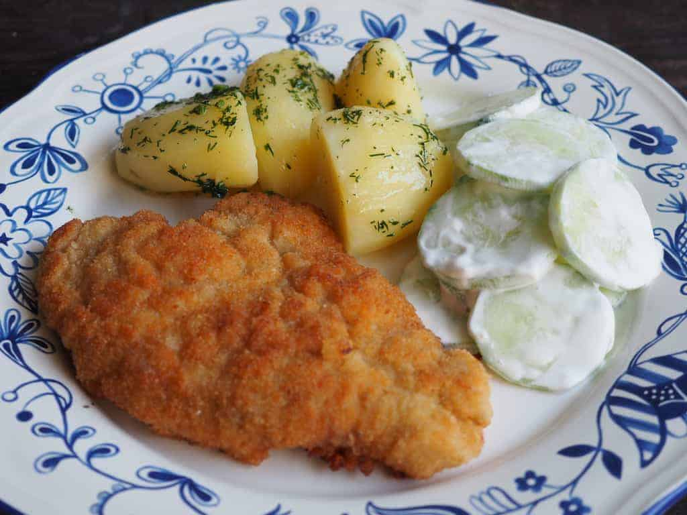

Kotlet Schabowy

Description
A kotlet is a type of fried meat popular all over Europe
Ingredients
- Meat (usually chicken breast or pork)
- 2+ eggs
- flour
- Bread crumbs
Steps
- Cut your meat into slices around 4cm thick. If you're using a chicken breast, use the whole thing
- Place your meat on a cutting board and cover with cling film
- Use a tenderiser to tenderise and flatten your Meat
- Pour a thin layer of oil onto a pan and heat to medium while you prepare the rest of the setup
- Season each tenderised slice with salt, pepper, and any other spice you like
- Crack your eggs into a bowl and beat them untill the yokes mix with the whites
- Pour both the flour and breadcrumbs onto indvidual plates
- Coat one slice into the flour, eggs, then breadcrumbs in that order
- Immediately put the slice into the oil
- Flip onto the other side after 2 minutes
- Repeat with the rest of your cutlets, replacing the oil after every 2-3 rounds
Home